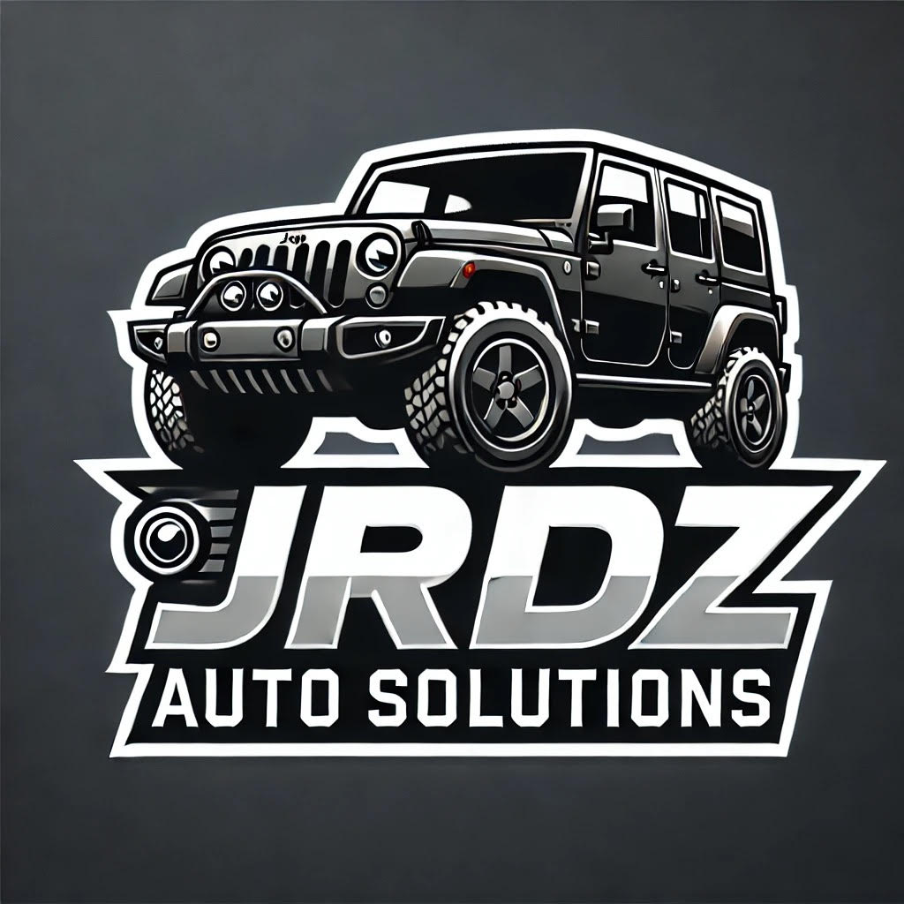

I specialize in installing dash cams, radar detectors, speakers, radios, subwoofers, backup cameras, and more. If you're looking for a specific service, feel free to ask—I’m happy to provide more details!
Right now, I offer the services listed above, but I plan to add more over time. I have some type of experience working on cars, and all installations come with a personal warranty. If you ever have any issues or concerns, just reach out (you can find my contact info on the Contact tab), and I’ll make sure everything is taken care of.
I offer both on-site and mobile installations. You can come to me, or I can come to you. Mobile service prices vary based on location, and any additional costs will be listed in the Services tab. If you're unsure about pricing for your location, just contact me, and I'll let you know.
Let me know how I can help!
Protect your vehicle while it's parked or driving by adding a dashcam whether it is front or real, come get your Dash Cam Professionally installed!
Start your car from the luxury of inside your home with a remote start to not suffer during the cold or hot days with a remote start, I can offer 1-way systems, 2-way systems, or even systems you can start from your phone! Ask about security if interested as well!
Add safety and convenience to your vehicle with back up camera! Only works with aftermarket radio, contact me about bundle prices with radio install!
Missing bass in your car? Fix it by adding a subwoofer to your vehicle!
Speakers too quiet? Boost that with a 4-channel amp!
Prevent getting speeding tickets by adding a radar detector in your vehicle to be able to spot laser.
Email: jrdzautosolutions@gmail.com
Phone: (773) 691-4282
Location: Please contact me for address